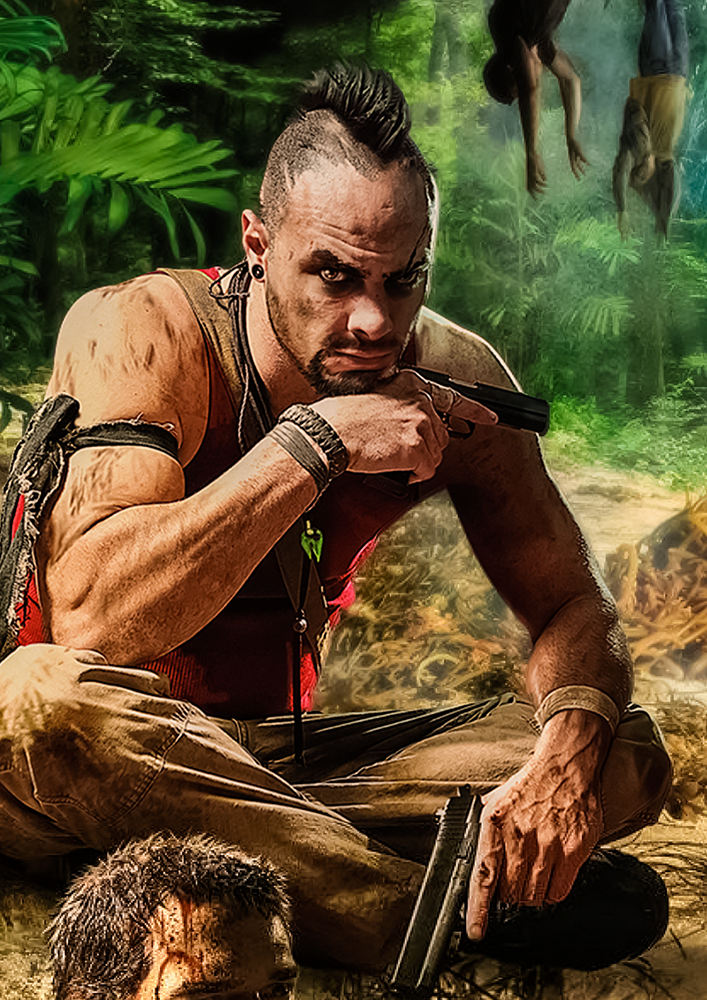

 FAR CRY 3 Plataformas: PS3, XBOX 360, PS4, XBOX ONE e PC Categorias: FPS, Sobrevivencia, Mundo aberto, Ação e Multijogador. Classificaçao: 18+. Desenvolvedor: Ubisoft. Distribuidora: Ubisoft. CARACTERÍSTICA UM ATIRADOR DE PRIMEIRA PESSOA DO MUNDO ABERTO Crie sua própria aventura de FPS. Personaliza as tuas armas, as tuas habilidades e a tua abordagem a cada missão, quer gostes de acção intensa de atirar e disparar, de quedas furtivas de grandes planos ou de sniping de longo alcance. UMA ILHA DE PERIGO E DESCOBERTA Explore um diverso parque infantil na ilha, desde cadeias montanhosas e pradarias pantanosas a praias de areia branca. Descubra relíquias, caçar animais exóticos, jogar minijogos e viajar rapidamente por terra, mar ou ar. Lute pelas cidades, templos, portos fluviais e muito mais! DESCUBRA UMA HISTÓRIA MEMORÁVEL E UM CASTELO INSANO DE PERSONAGENS Encontre um elenco envolvente e perturbado de personagens enquanto faz uma jornada rude ao lado sombrio da humanidade, escrito por um vencedor do Writers Guild Award. JOGUE COM AMIGOS EM UMA CAMPANHA CO-OP COMPLETA Jogue online e junte-se a uma campanha de quatro jogadores que desafia você a ser o seu melhor e trabalhar em conjunto para vencer. Experimente a ilha através dos olhos de uma tripulação rebelde em sua própria missão para sobreviver contra as probabilidades. UMA RAÇA DIFERENTE DE MULTIJOGADOR Inovador multiplayer recompensa habilidade e jogo em equipe. Para subir de nível, os jogadores devem apoiar-se mutuamente, aumentando os gritos de batalha, revivendo os companheiros de equipe e chamando as armas de apoio. Após cada partida, os jogadores têm a opção de punir ou mostrar misericórdia por seus inimigos de maneira divertida e distorcida, coreografados com cenas interativas. USE O EDITOR DE MAPAS PARA CRIAR E ACESSAR NOVO CONTEÚDO O poderoso e fácil de usar Far Cry® Map Editor está de volta, com recursos novos e aprimorados. Uma comunidade de cartógrafos garante um fluxo constante de conteúdo totalmente novo, com o melhor a ser exibido para o mundo inteiro desfrutar. Usando as ferramentas incluídas, você também pode criar mapas incríveis de maneira rápida e fácil. GRÁFICOS E JOGABILIDADE DE CORTE O Far Cry® 3 está sendo desenvolvido pelos designers de jogos de nível internacional que lhe trouxeram títulos aclamados pela crítica como Assassin’s Creed® 2, Assassin's Creed® Brotherhood e World in Conflict®.